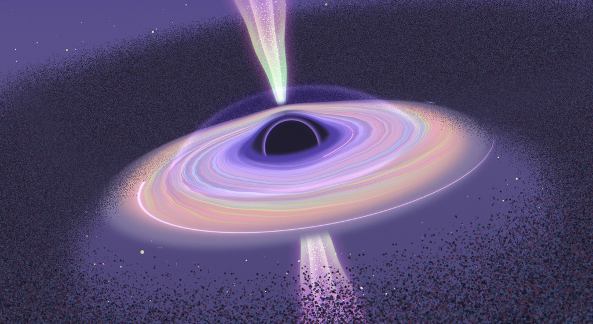

Research
I am interested in galaxy formation and evolution throughout cosmic time. My work utilizes JWST to investigate the effect of supermassive black holes (SMBHs) on their host galaxies. In the future, I aim to be a professor in astronomy, researching SMBHs, their host galaxies, and star formation regulation.
Projects
Narrow-line AGN in Quiescent Galaxies

Machine Learning Predictions for Exoplanet Mixed Cloud Particles
Credit : NASA / JPL / SwRI / MSSS / Gerald Eichstädt / Jackie Branc Exoplanet cloud particles are often assumed to be homogeneous; however, observational and theoretical evidence suggests the possibility of heterogeneous cloud particles,. Modeling these particles is unfortunately computational intensive, so we use neural networks to make predictions of well-mixed cloud particle opacities. The results of this work are being integrated into MieNet, a publicly-available Python package for fast Mie calculations of mixed cloud particles. I have worked on this project under Prof. Caroline Morley, and I developed MieNet with Dr. Sven Kiefer .
Publications
- Attaway, D., Kiefer, S., et al., in prep., "MieNet: A Python Package for Fast Well-mixed Cloud Particle Opacity Calculations".
- Kiefer, S., Attaway, D., et al., in prep., "Heterogeneous Cloud Particles in the Virga Cloud Code: Model Description and Application to YSES-1 c".
Conferences, Symposiums, and Forums
| Date | Name, Type | Material |
|---|---|---|
| April 2026 | Technology & Science Undergraduate Research Forum, Poster | Poster |
| April 2026 | UT Physics and Astronomy Research Symposium, Talk, Symposium Winner | Slides |
| March 2026 | Conference for Undergraduate Women and Gender Minorities in Physics, Poster | Poster |
| March 2025 | Technology & Science Undergraduate Research Forum, Poster | Poster |
| April 2025 | UT Physics Directed Reading Program Symposium, Talk | Slides |
| December 2024 | UT Physics Directed Reading Program Symposium, Talk | Slides |
Observing Time
June 2025 | 4 nights on Harlan J. Smith Telescope (2.7m), McDonald Observatory